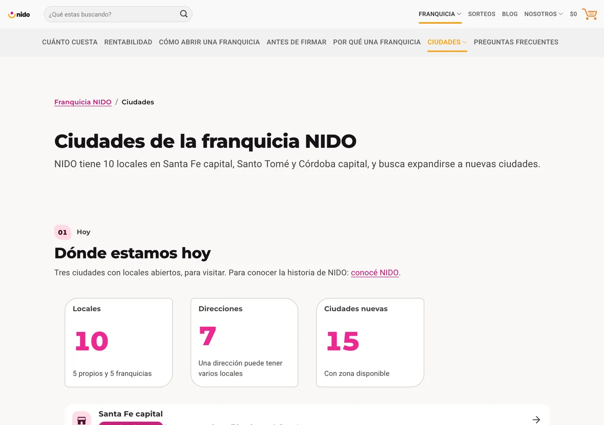
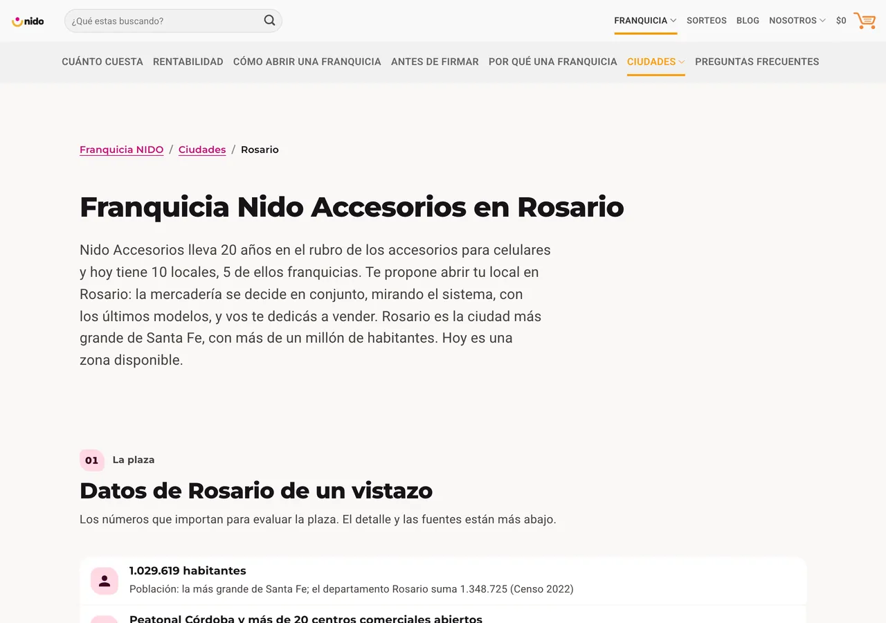

Nido Accesorios: קמפיינים שמביאים מועמדים וביקורים
רשת ארגנטינאית של אביזרים לטלפונים ניידים, עם 10 סניפים ותוכנית זיכיונות. אני מנהלת את קמפייני Meta ו-Google שלה ואת האימייל מרקטינג, מודדת את כל מה שיוצא ומספקת לה נתונים ומדריך לרשתות החברתיות.
Nido Accesorios הוא שם בדוי: השם, הלוגו והדומיין של הלקוח הוחלפו.
מה שהעסק היה צריך
עשר חנויות, חמש בבעלות הרשת וחמש בזיכיון, חנות אונליין ותוכנית לפתיחה בערים חדשות. מהשיווק ביקשה הרשת שלושה דברים:
- למכור יותר בחנויות ואונליין.
- למצוא זכיינים ועובדים לפתיחה בערים חדשות.
- לדעת איזה קמפיין הביא מה, כדי להחליט על ההשקעה לפי מספרים שאפשר לקרוא.
קמפיינים
Meta ו-Google, כל קמפיין עם יעד ועלות לתוצאה. תוצאות 28 הימים האחרונים, כפי שהם מוצגים ב-Campaign Suite עם נתונים מ-Meta Ads, מ-Google Ads ומ-Google Analytics 4 (2026).
| קמפיין | יעד | תוצאה |
|---|---|---|
| משרת מנהל/ת חנות | Meta, טופס הגשת מועמדות | 198 מועמדויות, הקמפיין עם העלות הטובה ביותר לתוצאה |
| פתיחת חנות בקורדובה | Meta, חשיפה | הגעה ל-74,758 אנשים ו-8,739 צפיות בווידאו |
| "Pasá por Nido y sumate" (בואו אל Nido והצטרפו) | Meta, תנועה | 2,375 קליקים על הקישור ו-29,416 צפיות בווידאו; Analytics רושם 2,449 ביקורים מהקמפיין הזה |
| תנועה לחנות | Instagram ו-Facebook בתשלום | 3,574 ביקורים בשבוע לעומת 1,019 בשבוע הקודם: עלייה של 1,515 מ-Instagram ושל 928 מ-Facebook |
"Pasá por Nido y sumate" הייתה קמפיין התנועה עם העלות הטובה ביותר לקליק. בסך הכול החשבון צובר 505 מועמדויות ב-28 ימים, 498 מהן דרך טפסי Meta.
אתר הזיכיונות, שאליו מגיע כל קמפיין
כדי למצוא זכיינים בניתי אתר זיכיונות: מרכז, דפי תמיכה (כמה זה עולה, רווחיות, איך פותחים, לפני החתימה, למה זיכיון Nido, ערים ושאלות נפוצות) ו-15 דפי עיר, כל אחד עם טופס יצירת קשר וכפתור WhatsApp.


החליקו הצידה או השתמשו בחצים. הקישו על צילום מסך כדי להגדיל אותו.
מדידה
- משפך ב-GA4 עם אירועים מותאמים, ו-Microsoft Clarity באזור הזיכיונות.
- קליקים ל-WhatsApp, Search Console וההמרה שיובאה ל-Google Ads.
- מסנן תנועה פנימית, כדי שהמספרים יהיו של לקוחות ולא של הצוות.
- הכול יחד ב-Campaign Suite, הדשבורד שעיצבתי כדי שהצוות יראה את התוצאות.
רשתות: סטטיסטיקות ומדריך
המותג מפיק תוכן משלו ל-Instagram ול-Facebook. אני מספקת לו את הסטטיסטיקות, האודיט, המדריך ולוח התוכן. הדבר הראשון שמסרתי היה אודיט של 108 פוסטים ושל 90 ימי סטטיסטיקות.
מזה יצא מדריך מותג לרשתות (גרסה 7, ל-Instagram ול-Facebook) עם מה שכדאי לשמר, תמהיל תכנים לפי נושא, קצב שבועי של כחמישה פוסטים וחודש לדוגמה של 20 פוסטים בארבעה נושאי תוכן. לוח התוכן נבדק מדי חודש עם הלקוח, לפי מה שמראות הסטטיסטיקות והמערכת.
קמפייני אימייל ללוח השנה הקמעונאי: ולנטיין, חזרה ללימודים, מועדון הנקודות והזיכיון. עוצבו ב-Beefree, מתוכננים קודם כול לנייד, עם המוצר וההצעה במסך הראשון.
איך אני עובדת עם הלקוח
- אני מתחילה מהצורך של העסק, לא מפורמט: פתיחה, משרה פנויה, חודש איטי, עיר חדשה. כל אחד הופך לקמפיין עם יעד.
- שום דבר לא עולה לאוויר בלי אישור. הקמפיינים נוצרים במצב מושהה, עם הקריאייטיב, הקהל והתקציב בתוכנית של עמוד אחד.
- המדידה נבנית לפני המודעה, כדי שאפשר יהיה לעקוב אחרי כל תוצאה עד הקמפיין שלה.
- דוח אחד בחודש, במילים פשוטות: מה שולם, מה זה הביא ומה עושים עכשיו.